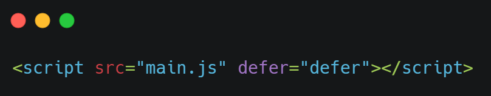

How JavaScript is Rendered
Understanding the internal working of the browser
7th August, 2021

The expert in anything was once a beginner.
The above quote gave me the confidence to write my first ever blog. This article aims to cover how exactly javascript is rendered to the browser and a little background of where it starts and how it completes its rendering.
TLDR;
- how a web browser works
- how the rendering engine works inside the browser
- how the script tags are injected
- different behaviors of a script tag with async and defer attributes
- which attribute to use when
Let's get started ü•≥
How a web browser works
So it all starts when you type a URL and hit enter.
The primary function of a web browser is to request resources from the web and display them inside of a browser window. Typically a browser will request HTML, CSS, JavaScript, and image content from a server and interpret them based on web standards and specifications. They follow standards because it allows websites to behave the same way across all browsers.
Let’s Focus on the Rendering Engine
The rendering engine has a very important job as it displays what you see on your screen. It communicates
with the networking layer of the browser to grab HTML code and other items are passed from a server.
It follows some steps sequentially:
- Parsing HTML and Creating DOM Tree
- Render the Constructed Tree
- Layout
- Paint
1. Parsing HTML and Creating DOM Tree : HTML is a hierarchal structure that begins with a tag, usually contains a and tag, and elements can be nested within elements. These HTML elements are parsed and turned into a “DOM tree” by the rendering engine. It is a tree-like structure made out of HTML, where each tag is a branch starting at the root element.
2. Render the Constructed Tree : CSS attributes are also parsed and combined with the DOM tree (also known as Cascading Style Sheet Object Model - CSSOM) to create a “render tree”. This is a tree of visual elements such as height,width and color ordered in the hierarchy in which they are to be displayed in the browser.
3. Layout : Once the render tree is constructed, the rendering engine recursively goes through the HTML elements in the tree and figures out where they should be placed on the screen. This starts at the top left in position 0,0 and elements and attributes are mapped to coordinates on the screen.
4. Paint : Each node of the render tree is drawn out on the screen by communicating with the Operating System Interface which contains designs and styles for how UI elements should look.
The most awaited part ü§© How .js files loaded in the browsers
Let's get to know how script tag is injected
When the browser loads HTML and comes across a script tag, it can’t continue building the DOM. It must execute the script right now. The same happens for external scripts the browser must wait for the script to download, execute the downloaded script, and only then can it process the rest of the page.
The different scenarios of using script tag in code
Script vs Defer vs Async
The Normal Script Tag
while the HTML parsing the code line by line and when it encounters script tag, then the browser stops the parsing and fetches the scripts from the network, and executes the downloaded scripts then and there only. then the remaining HTML parsing continues, so at that point in time, there is a delay in the parsing of HTML.
Note: we may not know that how long does it takes to fetch from the network and executing it in the browser.
Using Defer Attribute
The defer attribute tells the browser not to wait for the script. Instead, the browser will continue to process the HTML, build DOM. The script loads “in the background”, and then runs when the DOM is fully built.
- Scripts with defer never block the page.
- Scripts with defer always execute when the DOM is ready
Using Async Attribute
The async attribute is somewhat like defer. It also makes the script non-blocking. But it has important differences in the behavior. The async attribute means that a script is completely independent:
- The browser doesn’t block on async scripts (like defer).
- Other scripts don’t wait for async scripts, and async scripts don’t wait for them.
when to use async and defer the most confusing part
- Async does not guarantee the order of execution of scripts but defer guarantees it.
- if you have multiple scripts which are dependent on each other then defer suits best.
- suppose if you have to load some external scripts which are independent of your code, then async suits best.
Wrap
you should be using the defer attribute as default because it is recommended the most because it does not pause the HTML parsing and scripts are fetched from the network and once the parsing is completed the scripts are executed.
Happy Coding! üòä